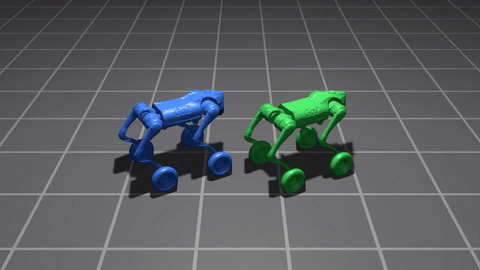
Tornado Spin DriftRapid in-place yaw spinning with expanding and contracting limb radius, creating a tornado-like appearance.
Learning Quadruped Skills via Text-to-Trajectory Generation
* Equal contribution
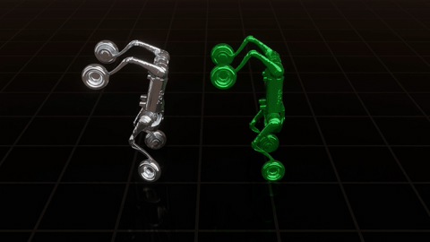
Side view of skating on two legs
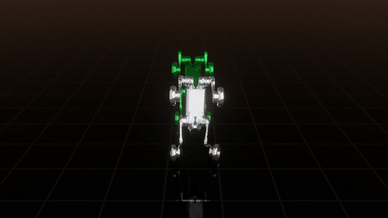
Back view of skating on two legs
We visualize never-before-seen skating skills on two legs generated by MimicAgent.
We present MimicAgent, a text-to-trajectory generation framework for learning dynamic quadruped skills. Although reward shaping is extensively used when training quadruped policies, navigating the resulting reward landscape is notoriously difficult, requiring hours of ``graduate student descent''. Eureka attempts to automate reward design with LLMs, but we find that it struggles to generalize across diverse skills and morphologies. Motivated by the success of example-guided RL for humanoids, we revisit skill learning from demonstrations for quadrupeds. Unlike humanoids, which can exploit large-scale motion capture datasets for learning, quadrupeds lack such reference motion data. We make the observation that manually keyframing quadruped reference motions can be more intuitive than reward shaping; in particular, we find that rather coarse and even dynamically-infeasible motions can still be effective reference targets for example-guided RL. However, manual keyframing is still too cumbersome to create large-scale skill libraries. To address this challenge, we propose an LLM-based pipeline that generates kinematically feasible quadruped trajectories for diverse skills. Although these trajectories are not dynamically feasible, we show that they are sufficient to train successful policies. Across all evaluated skills, human raters often prefer policies generated by MimicAgent over those produced by Eureka.
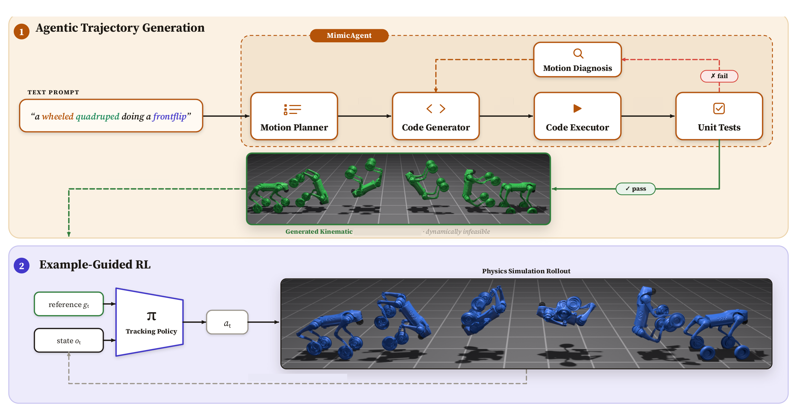
We compare MimicAgent against two state-of-the-art baselines (Eureka and Manual Keyframing) across seven skills: Trot, Bound, Side Flip, Front Flip, Aerial Crossover (AC), Crab Diagonal Scuttle (CDS), and Reverberating Yaw Pulse (RYP). Trot and Bound run on the Unitree Go2; the remaining five skills run on its wheeled-legged variant, Go2-W. Each video demonstrates the performance of different methods on the same skill.
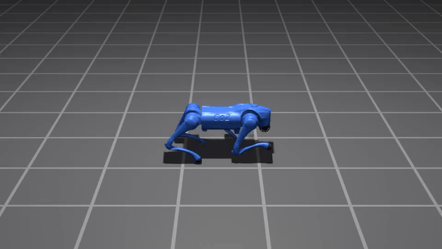
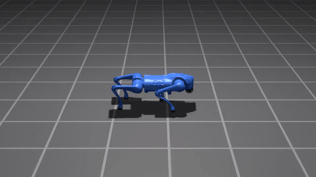
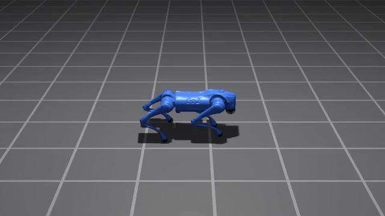
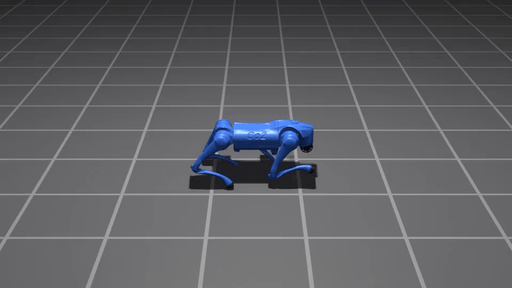
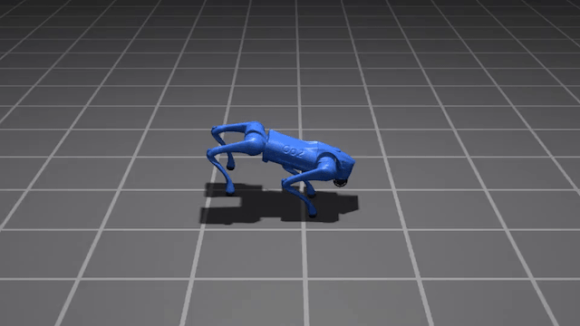
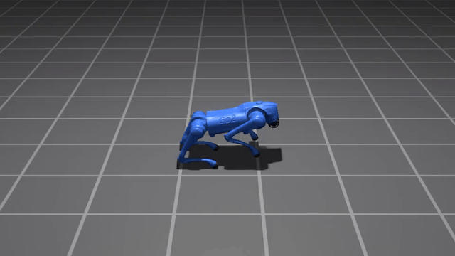
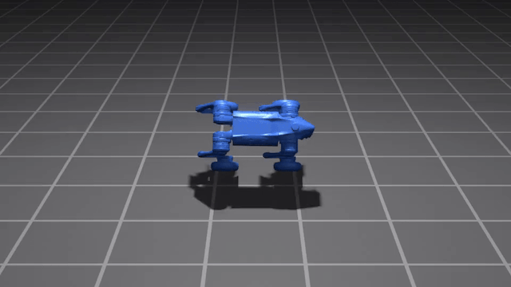
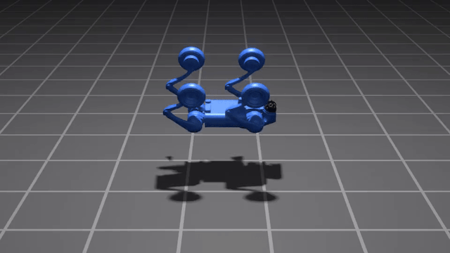


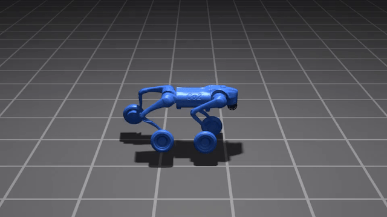
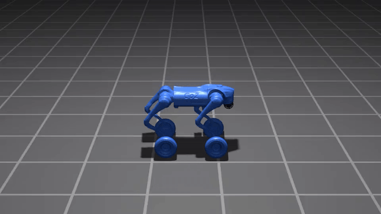
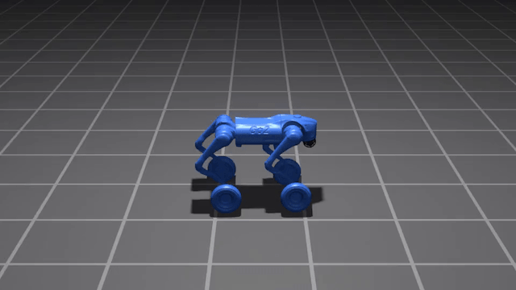


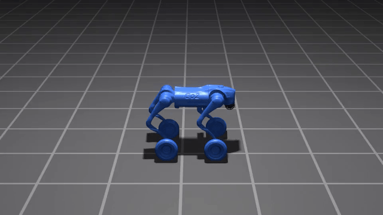
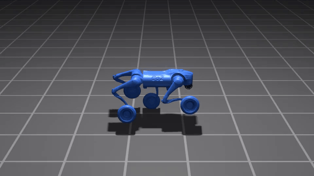
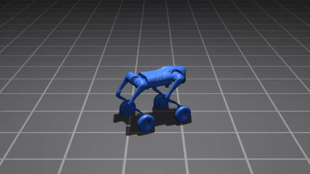
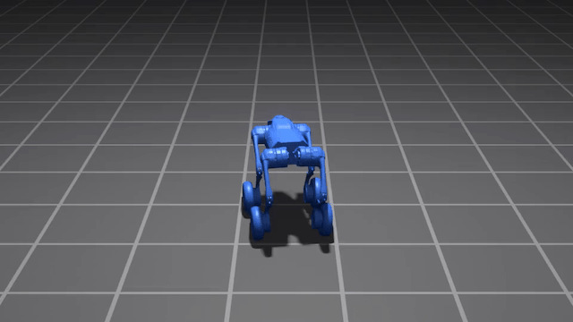
User study (n = 57). Mean human preference rating (1–5, higher is better) for policies from human-annotated keyframes, Eureka, and MimicAgent. Bold marks the top-rated method for each skill. Users prefer MimicAgent for Trot, Side Flip, Front Flip, Aerial Crossover, and Crab Diagonal Scuttle; human keyframes for Bound (where all methods score low); and Eureka for Reverberating Yaw Pulse.
| Robot | Go2 | Go2-W | |||||
|---|---|---|---|---|---|---|---|
| Method ↓ / Skill → | Trot | Bound | Side Flip | Front Flip | AC | CDS | RYP |
| Keyframe Tool | 2.9 ± 1.4 | 3.5 ± 1.4 | 3.5 ± 1.2 | 4.2 ± 1.0 | 2.3 ± 1.3 | 2.5 ± 1.2 | 1.8 ± 1.2 |
| Eureka | 2.6 ± 1.5 | 2.8 ± 1.4 | 1.4 ± 1.1 | 1.1 ± 0.3 | 1.9 ± 1.1 | 2.1 ± 1.1 | 4.3 ± 1.4 |
| MimicAgent | 4.4 ± 1.0 | 3.2 ± 1.4 | 4.9 ± 0.3 | 4.6 ± 0.8 | 4.2 ± 1.0 | 4.5 ± 0.5 | 2.6 ± 1.4 |
MimicAgent learns and executes a wide range of locomotion skills directly from text descriptions. The green robot shows the reference trajectory generated by MimicAgent, and the blue robot shows the learned policy.

Tornado Spin DriftRapid in-place yaw spinning with expanding and contracting limb radius, creating a tornado-like appearance.
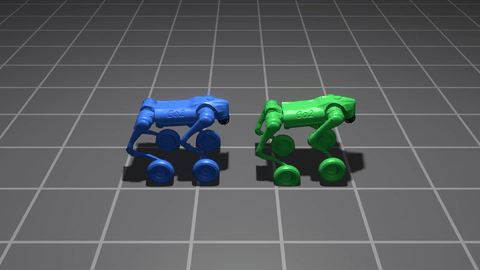
Inchworm CompressionForward motion through alternating full-body compression and extension cycles.
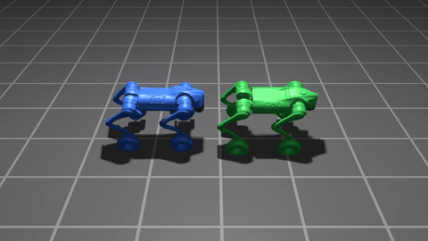
Metronome Sway AdvanceForward locomotion driven by large-amplitude lateral base swaying, rocking side to side like an inverted-pendulum metronome.
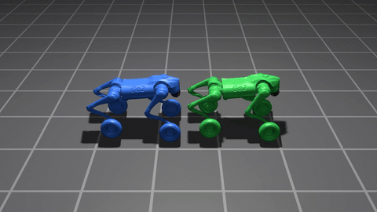
Propeller Spin AdvanceForward skating using propeller-like leg rotations for continuous thrust.
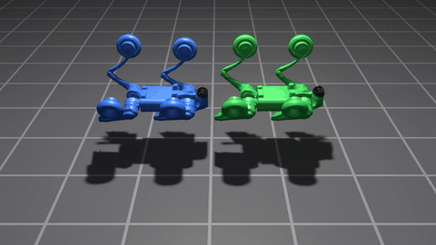
Reverse Cartwheel DriftBackward lateral locomotion via cartwheel-style rotations where the legs trace circular arcs while drifting backward.
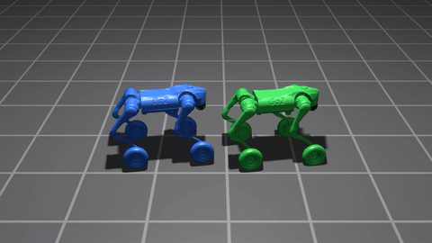
Async Lissajous CrawlForward locomotion using fully independent leg motions, where each leg traces a distinct periodic trajectory that together produce smooth, stable translation.
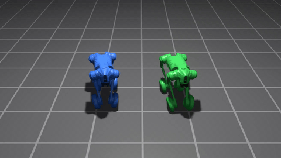
Diamond Rotate StepThe legs trace a diamond-shaped pattern on the ground while the robot turns in place.
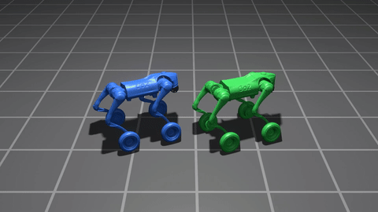
Hammock Swing TurnA turning gait where the base sways side to side, perpendicular to the travel direction, like a swinging hammock.
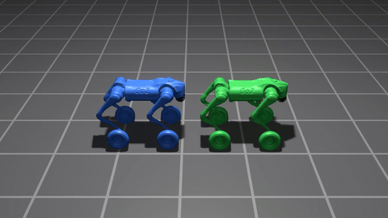
Orbiting SatellitesForward locomotion where diagonal leg pairs orbit around their shared center while the base translates.
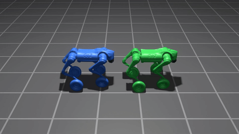
Pinwheel Lateral SpinSideways locomotion where the legs rotate like pinwheel blades while the base translates laterally.
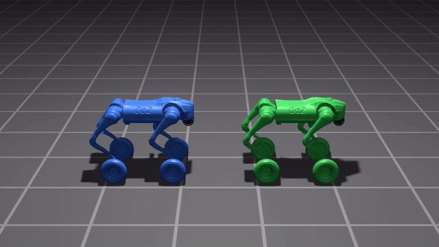
Backflip to HandstandThe robot launches into a backward flip and recovers into a balanced handstand, holding its weight on its two front legs.
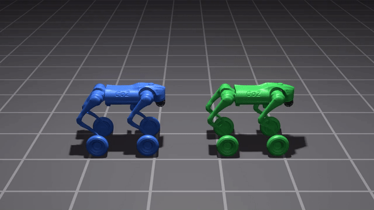
Four-Leg to HandstandFrom a normal four-legged stance, the robot shifts its weight forward and rises smoothly into a handstand, balancing on its front legs.
MimicAgent is not limited to quadrupeds, the same text-to-trajectory pipeline generates full-body humanoid motions. Shown here on the SMPL body model are everyday motions that already appear in standard motion-capture datasets; MimicAgent reproduces them directly from a text prompt.
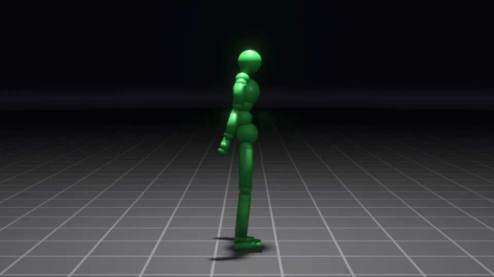
WalkA natural bipedal walking gait with alternating heel-to-toe steps and coordinated arm swing.
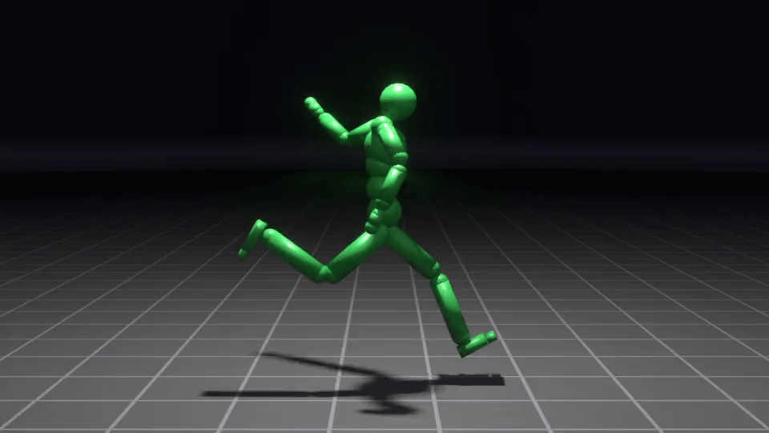
RunA dynamic run with a clear airborne flight phase and pronounced arm drive propelling the body forward.
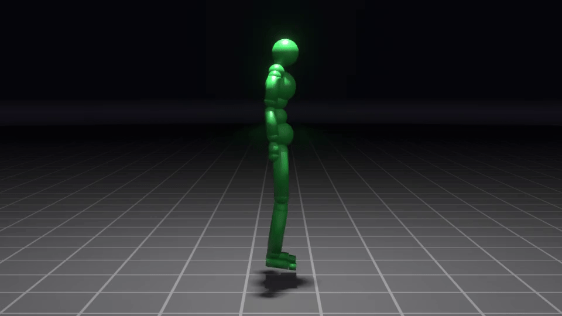
JumpAn explosive vertical jump — crouch, launch, and soft landing — with the whole body coordinating takeoff and absorption.
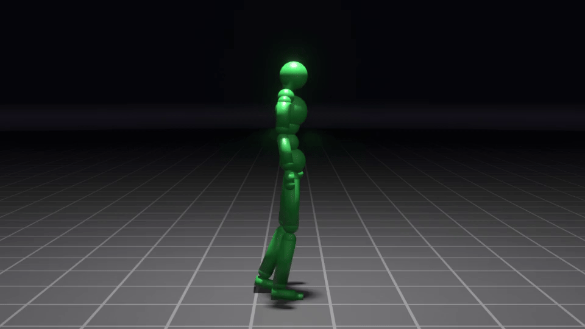
KickA balanced single-leg kick that swings one leg forward while the torso and arms counterbalance to stay upright.
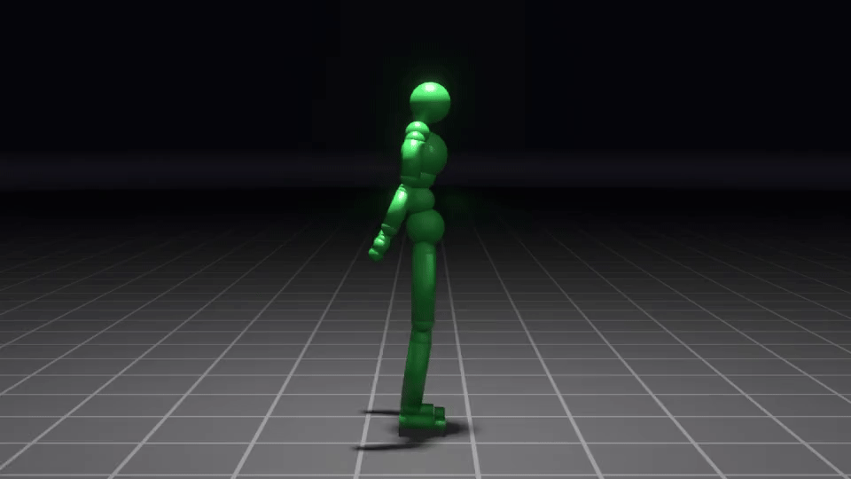
SpinA full-body turn about the vertical axis, with the arms tucked and the feet repositioning to carry the rotation around.
In contrast to the everyday motions above, these are novel, difficult skills — dynamic acrobatics and contact-rich interaction with objects and terrain — many of which rarely or never appear in motion-capture datasets. MimicAgent synthesizes each one from a text prompt alone, going beyond what standard mocap corpora contain. Each clip shows the humanoid reference motion (in green) produced by MimicAgent.
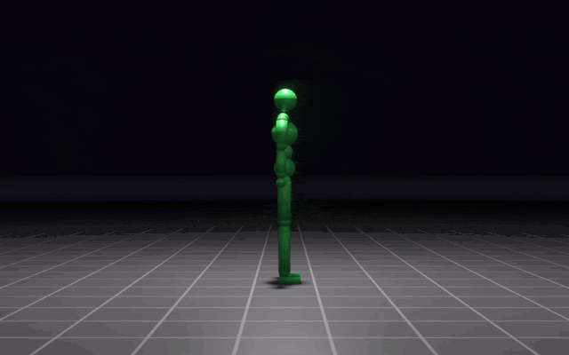
Ballet SpinA controlled full-body pirouette, spinning about the vertical axis on a single supporting leg while the arms extend for balance.
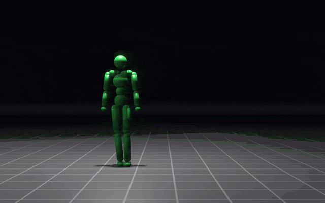
CartwheelA sideways handspring — the body inverts and rotates through a wheel, planting the hands and then swinging the legs overhead before landing on the feet.
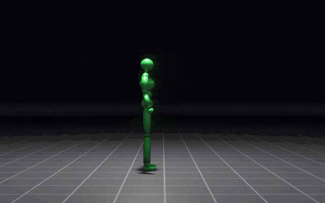
Front FlipA forward aerial somersault: the humanoid launches upward, tucks into a full front rotation, and lands upright on both feet.
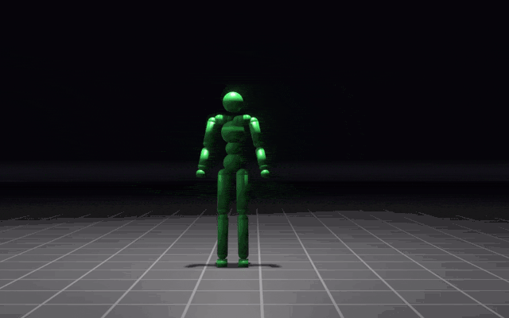
Side FlipA lateral aerial somersault, rotating a full turn sideways through the air and recovering to a stable standing pose.
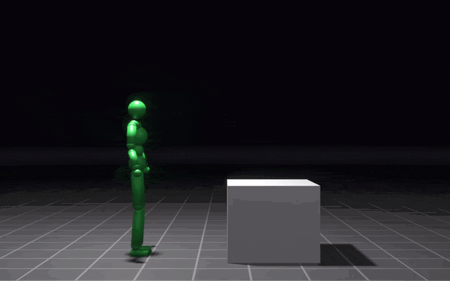
Box ClimbThe humanoid steps up and pulls its full body onto a raised block, coordinating hands and feet to mount the platform.
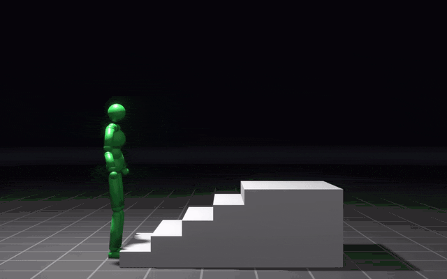
Stair ClimbAscending a flight of steps with alternating footfalls, shifting weight forward to lift the body up each stair.
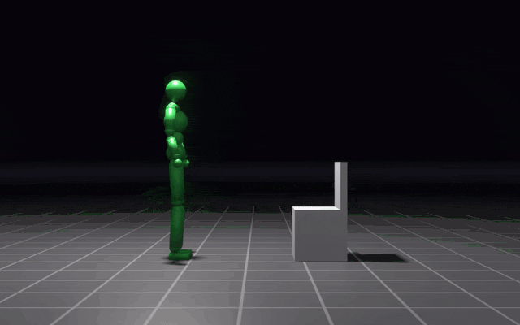
Sit on ChairApproaching a chair and lowering the body into a stable seated posture, settling its weight onto the seat.
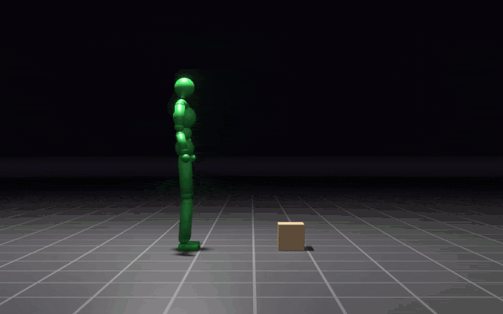
Carry BoxPicking up a box, holding it against the torso, and walking forward while keeping the load balanced.
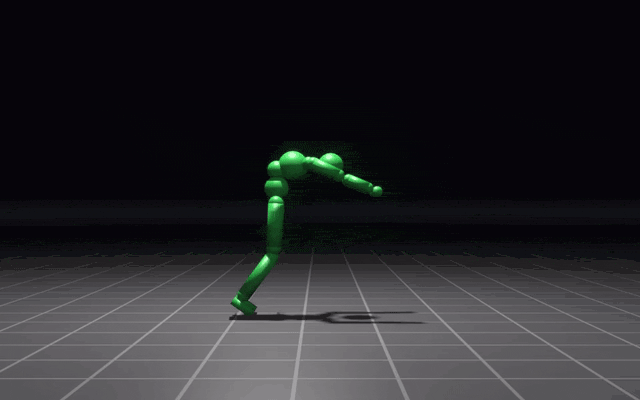
CrawlMoving forward on hands and knees, staying low to the ground with a coordinated four-point crawling gait.
MimicAgent policies transfer from simulation to the physical robot. The clips below show several skills executed on real hardware.
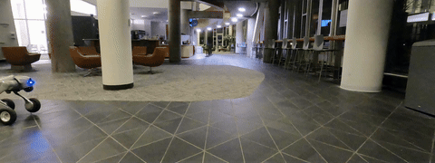
Four-Legged TrotWalking policy on the physical robot — a stable four-legged trot gait on flat ground, following a 0.5 m/s velocity command.
Two-Legged WalkWalking on its two front legs while maintaining balance and following 0.4 m/s.
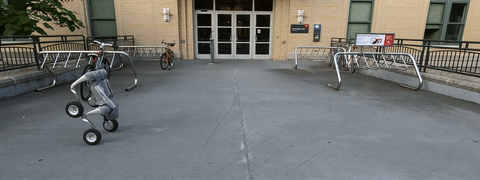
Two-Legged SkatingSkating on its two front legs through a push–glide–push sequence at 0.4 m/s.
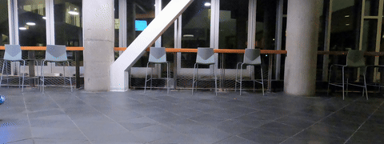
Two-Legged RollRolling forward on just its two front legs, keeping the torso parallel to the ground and lifting the back legs.
We distill the trained teacher policy into a deployable student policy that runs from onboard observations alone. Below, all three tracks execute the same four-leg-to-handstand spin transition side by side, the student stays in near-lockstep with both the teacher and the reference, showing that distillation preserves this difficult, dynamic skill.
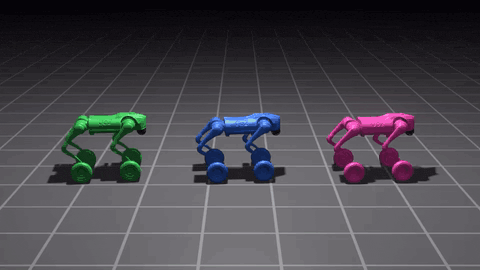
If you find our work useful, please cite:
@article{nayak2026mimicagent,
title = {MimicAgent: Learning Quadruped Skills via Text-to Trajectory Generation},
author = {Lucky Kant Nayak and Narayanan Palghat Parameswaran and Neehar Peri and Deva Ramanan},
journal = {Conference/Journal Name},
year = {2026}
}